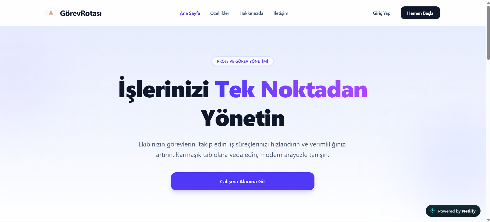
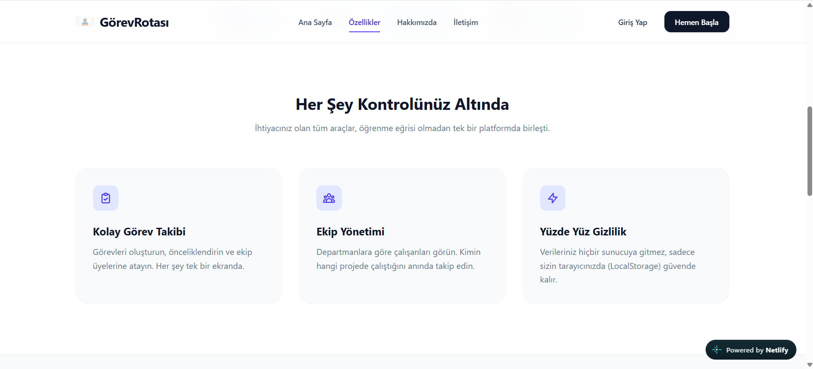
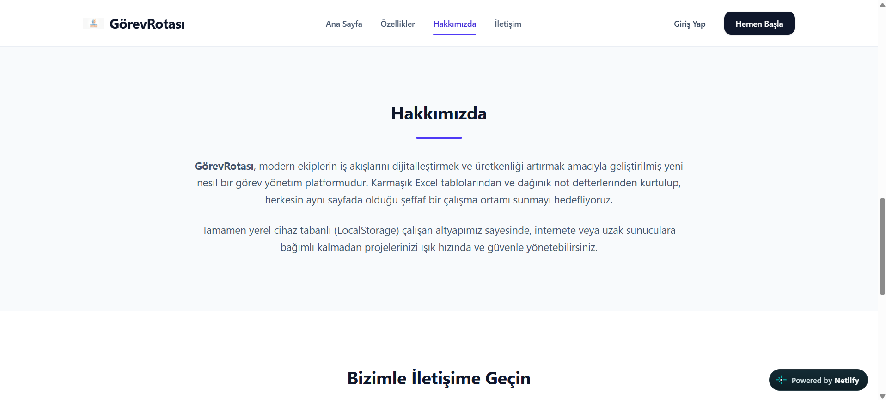
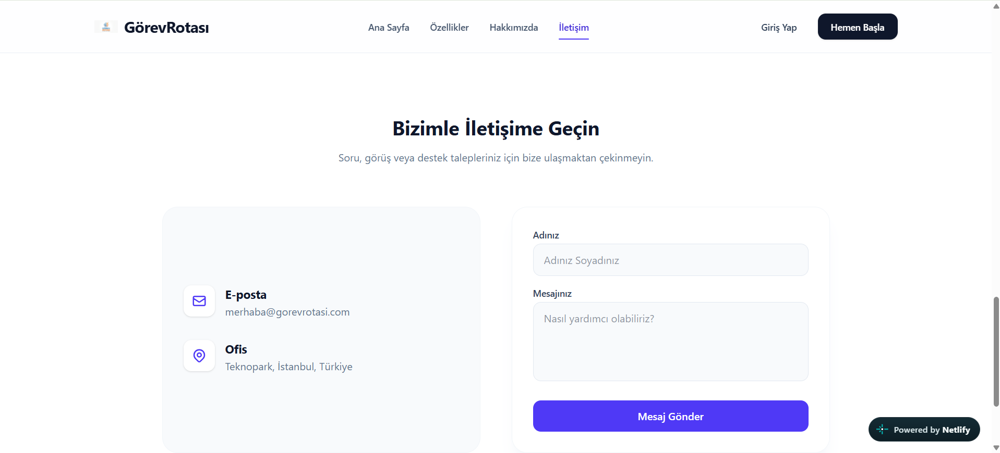
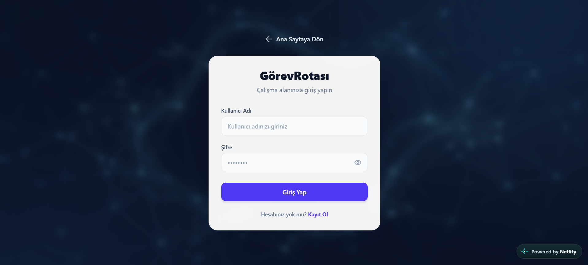
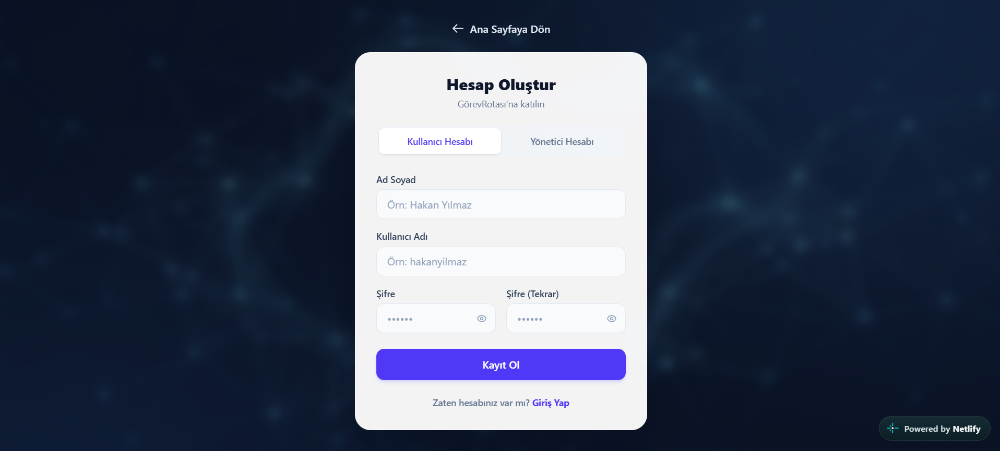
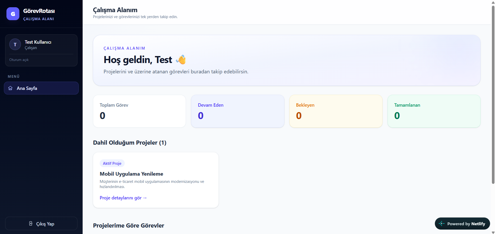
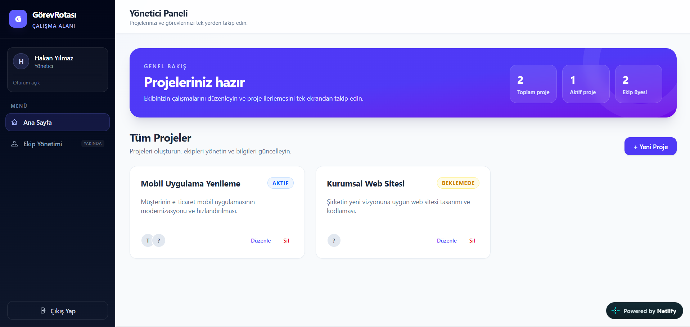
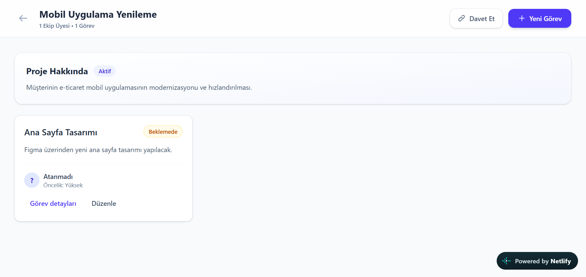
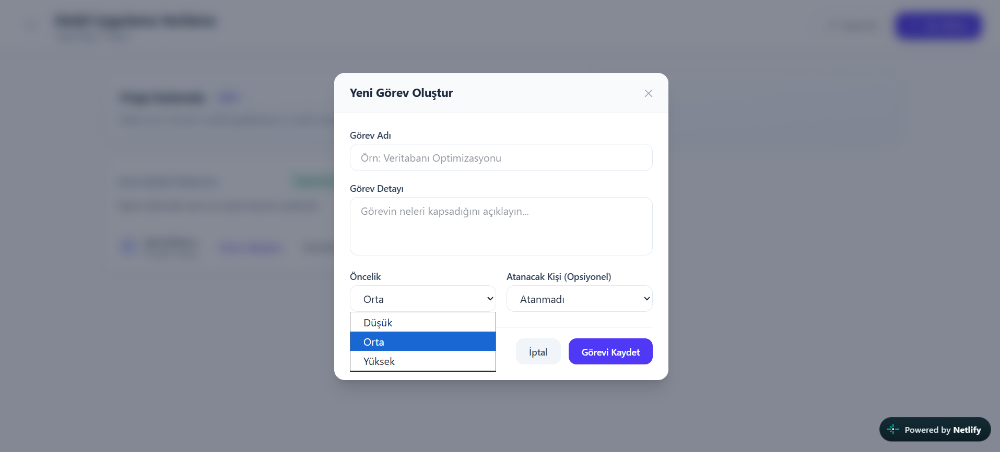

Sistem Dokümantasyonu
Görev ve proje yönetimi uygulamasının kullanıcı rehberi, teknik mimarisi, veri modeli ve işletim notları.
Başlangıç
01 · Genel Bakış
GörevRotası, proje ekiplerinin işlerini düzenlemesi ve görev ilerlemesini takip etmesi için hazırlanmış tarayıcı tabanlı bir uygulamadır.
Sistem; herkese açık tanıtım sayfası, hesap oluşturma ve giriş ekranları, rol bazlı çalışma alanları ve proje detay ekranlarından oluşur. Yönetici projeleri ve ekip atamalarını yönetir; çalışanlar dahil oldukları projeleri ve kendilerine atanmış görevleri görüntüler.
Canlı adres: https://gorevrotasi.netlify.app
02 · Roller
| Rol | Çalışma alanı | Yetenekler |
|---|---|---|
Yöneticiyonetici | Yönetici Paneli | Projeleri listeleme, oluşturma, düzenleme ve silme; ekip üyelerini projeye ekleme; proje görevlerini oluşturma ve düzenleme; davet bağlantısı kopyalama. |
Çalışankullanici | Çalışma Alanım | Dahil olduğu projeleri ve kendisine atanan görevleri görüntüleme; görev durumunu Beklemede’den Devam Ediyor’a, ardından Tamamlandı’ya ilerletme; proje ve görev ayrıntılarını görüntüleme. |
Yeni kayıt ekranında kullanıcı rolü seçilebilir. Davet üzerinden açılan kayıt akışı çalışan rolüyle devam eder. Uygulama arayüzünde “Çalışan” etiketi kullanılsa da veri modelindeki rol değeri kullanici şeklindedir.
03 · Kullanım
| Rol | Kullanıcı adı | Parola |
|---|---|---|
| Yönetici | hakan | 123456 |
| Çalışan | test | 123456 |
Bu kimlik bilgileri yalnızca örnek/demo verisidir. Uygulamanın ilk kez açıldığı tarayıcıda kullanılabilir; kayıtlı LocalStorage verisi varsa içerik farklı olabilir.
Yönetici proje ekranında Davet Et bağlantısını kopyalar. Bağlantıyı açan kullanıcı giriş yapabilir veya davet bağlamında kayıt olabilir; başarılı katılımda kullanıcı proje ekibine eklenir.
04 · Teknik Tasarım
Uygulama, istemci tarafında çalışan bir React SPA’dır. Arayüz bileşenleri kullanıcı etkileşimlerini toplar; servis hook’ları iş verilerini yönetir; ortak LocalStorage hook’ı güncel state’i tarayıcı depolamasına yazar.
Backend, REST/GraphQL API veya merkezi veritabanı katmanı yoktur. Netlify statik dağıtımı uygulama verilerini senkronize etmez.
| Rota | Erişim | Açıklama |
|---|---|---|
| / | Herkese açık | Ana sayfa, özellikler, hakkında ve iletişim bölümleri. |
| /login | Oturum yok | Giriş. Oturum açıksa çalışma alanına yönlendirir. |
| /register | Oturum yok | Yeni kullanıcı kaydı ve rol seçimi. |
| /dashboard | Oturum gerekli | Role göre yönetici veya çalışan paneli. |
| /proje/:id | Oturum gerekli | Yönetici veya proje üyesi için proje ayrıntıları. |
| /davet/:inviteToken | Davet bağlantısı | Davet kodunu doğrulama, giriş ve proje üyeliğine katılım. |
| /davet/:inviteToken/kayit | Davet bağlantısı | Davet bağlamında kayıt. Oturum açıksa dashboard’a yönlendirir. |
Oturum denetimi App.jsx içindeki route yönlendirmeleriyle yapılır. Proje ayrıntı ekranı ayrıca yöneticiyi veya proje ekibi üyesini kontrol eder.
05 · Veri
| Varlık | Temel alanlar | Durum / ilişki |
|---|---|---|
| Kullanıcı | id, ad_soyad, kullanici_adi, sifre, rol | Rol: yonetici veya kullanici. |
| Proje | id, proje_adi, aciklama, durum, ekip_uyeleri, olusturan_id, davet_kodu | Proje durumu: devam_ediyor veya beklemede. Ekip üyeleri kullanıcı kimlikleridir. |
| Görev | id, proje_id, gorev_adi, gorev_detayi, durum, oncelik, calisan_id, son_tarih | Görev proje ile ilişkilidir; çalışan ataması isteğe bağlıdır. Öncelik Düşük, Orta veya Yüksek olabilir. |
| Anahtar | İçerik |
|---|---|
| app_session | Mevcut oturum açmış kullanıcı veya null. |
| app_users | Başlangıç kullanıcıları ve tarayıcıda oluşturulan kayıtlar. |
| app_projects | Projeler, ekip üyesi kimlikleri ve davet kodları. |
| app_tasks | Görevler, durumlar, öncelikler ve atama bilgileri. |
İlk değerler src/constants/mockData.js içinden yüklenir. Veriler aynı origin ve tarayıcı profilinde sayfa yenilendiğinde kalır. Tarayıcı verilerinin silinmesi uygulama state’ini de siler.
06 · Güvenlik
07 · Geliştirici Rehberi
git clone https://github.com/KayliAli/Tnc-WebProjects.git cd Tnc-WebProjects/TaskProject-Management npm install npm run dev
Vite geliştirme sunucusu varsayılan olarak http://localhost:5173 adresinde açılır.
| Komut | Açıklama |
|---|---|
npm run dev | Yerel geliştirme sunucusunu başlatır. |
npm run lint | ESLint ile kaynak kodu denetler. |
npm run build | Production çıktısını dist/ klasörüne üretir. |
npm run preview | Önceden oluşturulmuş production çıktısını yerelde sunar; önce npm run build çalıştırın. |
08 · Dağıtım
Uygulamanın canlı sürümü Netlify üzerinde yayınlanır: gorevrotasi.netlify.app. Vite production build statik dosyaları dist/ altında üretir.
public/_redirects dosyasındaki /* /index.html 200 kuralı, React Router rotalarının doğrudan açılmasını ve yenileme sonrası SPA giriş sayfasına düşmesini sağlar.
Repository’de uygulama verilerini sunucuya gönderen bir deploy ortam değişkeni veya backend yapılandırması bulunmaz. Yayındaki kullanıcı verileri de tarayıcının kendi LocalStorage alanında kalır.
09 · Destek
| Belirti | Kontrol / çözüm |
|---|---|
| Giriş bilgisi kabul edilmiyor | Demo hesabını deneyin. Daha önce aynı origin’de hesap verisi oluşturulduysa LocalStorage’daki app_users başlangıç örneklerinin yerini almış olabilir. |
| Dashboard boş veya beklenmedik görünüyor | Uygulama verileri tarayıcı profilinde saklanır. Doğru origin’de olduğunuzu ve app_projects/app_tasks kayıtlarını kontrol edin. |
| Davet bağlantısı geçersiz görünüyor | Davet edilen tarayıcıda aynı proje ve davet kodu kayıtlı olmalıdır. Başka cihazdaki yerel veriler otomatik taşınmaz. |
| Direkt proje rotası yenilemede açılmıyor | Hosting’in SPA fallback kuralını etkinleştirin. Netlify için public/_redirects dosyasının build çıktısına kopyalandığını kontrol edin. |
| Demo verilerini sıfırlama | Tarayıcı geliştirici araçlarında uygulamanın Local Storage alanındaki app_session, app_users, app_projects ve app_tasks anahtarlarını silin, ardından sayfayı yenileyin. Bu işlem o tarayıcıdaki değişiklikleri kalıcı olarak siler. |
10 · Kaynak Kod
TaskProject-Management/ ├── public/ # Statik varlıklar ve SPA yönlendirme kuralı ├── src/ │ ├── components/ # Yönetici/çalışan görünümleri ve görev arayüzleri │ ├── constants/ # Başlangıç örnek verileri │ ├── hooks/ # LocalStorage state hook'ı │ ├── interfaces/ # Kullanıcı, proje ve görev tip tanımları │ ├── pages/ # Ana sayfa, giriş, kayıt, dashboard, davet, proje │ ├── services/ # Yönetici ve çalışan veri işlemleri │ ├── utils/ # Görev durumu normalizasyonu │ ├── App.jsx # Route tanımları ve oturum koruması │ └── main.jsx # React uygulama başlangıcı ├── index.html ├── package.json └── vite.config.js
Temel kaynaklar: src/App.jsx, src/services/, src/hooks/useLocalStorage.jsx, src/constants/mockData.js ve src/interfaces/.
11 · Görsel Rehber
Görseller repository’deki docs/screenshot/ klasöründen alınmıştır.









